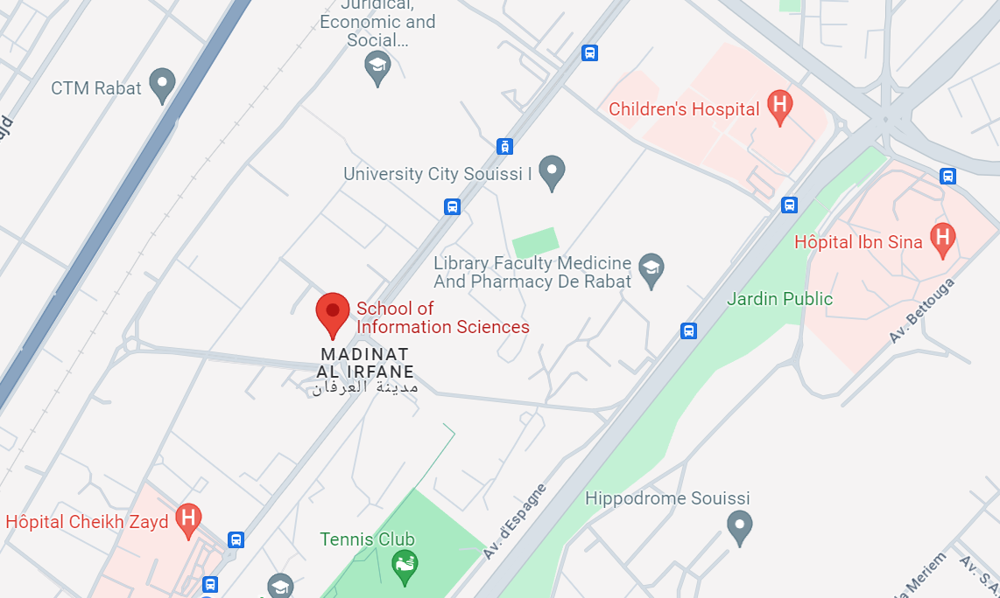

ESI
Presentation :
L'École des Sciences de l'Information (ESI) à Rabat, au Maroc, est une grande école publique d'ingénieurs, relevant du Haut-Commissariat au Plan (HCP). Classée parmi les établissements scientifiques et techniques, elle est regroupée avec d'autres instituts dans le pôle "Sciences et Technologie de l'Information et de la Communication".
Location :
Filieres :
Ingénierie des Systèmes d'Information et de la Transformation Digitale
DetailsICSD
Ingénierie des Connaissances et Science des Données
Details
IIN
Ingénierie de l'Information Numérique
DetailsISSIC
Ingénierie de la Sécurité des Systèmes d’Information et Cyberdéfense
DetailsTronc Commun :
Overview
Le premier semestre met l'accent sur les bases telles que l'architecture des ordinateurs, les algorithmes et les mathématiques, tout en intégrant des éléments d'économie et de communication. Le deuxième semestre approfondit ces connaissances avec des sujets avancés tels que la gestion de bases de données, les technologies web et la programmation avancée, en plus de couvrir des aspects de gestion et de marketing. Cette approche équilibrée entre théorie et pratique prépare les étudiants à relever les défis de l'évolution constante du domaine informatique. En mettant l'accent sur les compétences techniques ainsi que sur la communication et l'anglais.

projets :
Programmation en C :
Les étudiants ont pour mission de créer un jeu en utilisant le langage C et une bibliothèque ( SDL2, OpenGL…) Ce projet leur permet d'appliquer leurs connaissances en programmation, en structures de données et en algorithmes pour développer un jeu entièrement fonctionnel.
ECM :
les étudiants utilisent une application de gestion de contenu telle qu'un système ERP, DAM ou CMS pour gérer un ou plusieurs types de contenu au sein d’une entreprise fictive
E-services :
les étudiants sont chargés de créer un service en ligne dans l'un des domaines suivants : e-commerce, e-learning ou e-gouvernement/administration. Ils choisissent des solutions/logiciels/plateformes appropriés pour déployer leur service, telles que Shopify pour l'e-commerce…
Développement Web et Programmation PHP :
Dans ce projet de développement web full-stack, les étudiants doivent créer un site web dynamique en utilisant le langage de programmation PHP. Ils concevront l'interface frontale en utilisant HTML, CSS et JavaScript, tout en mettant en œuvre la fonctionnalité côté serveur avec PHP .
Knowledge Management :
Les étudiants sont chargés de créer une base de connaissances contenant des FAQ, et des ressources et guides sur un thème choisi par les étudiants. Cette base de connaissances est conçue pour fournir une source centralisée d'informations pertinentes et utiles sur le sujet sélectionné.
ISITD :
La filière ISITD se concentre sur la conception, le développement et la gestion des systèmes d'information. Les étudiants apprennent à concevoir des solutions informatiques efficaces pour répondre aux besoins des entreprises et des organisations. Cette filière couvre un large éventail de sujets, y compris les bases de données, le développement web, les technologies de l'information, et la gestion de projets informatiques.
IIN
se concentre sur la manipulation, la transmission, et la gestion de l'information sous forme numérique. Les étudiants de cette filière acquièrent des compétences spécialisées dans le traitement des données numériques, la conception de systèmes d'information avancés, et la gestion des technologies de l'information.
ICSD
est une discipline qui combine la conception de systèmes intelligents avec l'analyse de données avancée. Les étudiants apprennent à exploiter les connaissances et les données pour résoudre des problèmes complexes dans des domaines tels que l'intelligence artificielle, l'apprentissage automatique, l'extraction de connaissances, et la fouille de données.
ISSIC
est axée sur la protection des systèmes d'information contre les cybermenaces et les attaques informatiques. Les étudiants apprennent à concevoir, mettre en œuvre et gérer des stratégies de sécurité informatique robustes pour prévenir les cyberattaques, détecter les intrusions et réagir efficacement aux incidents de sécurité.